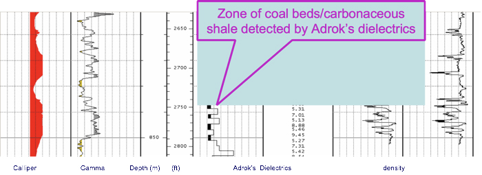
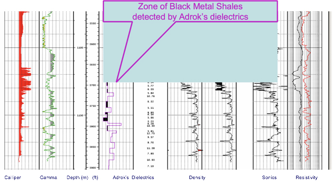
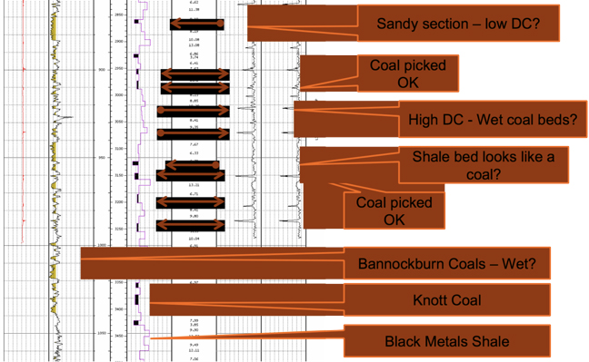

Case History:
Central Scotland, coal bed methane
- Working with BG Group to develop a reliable coal bed methane exploration and appraisal survey tool based on Adrok’s technology
- Survey Area located onshore United Kingdom
- Adrok trained on 4 drilled well locations (for coal signatures and for sedimentary rock & Igneous rock layer signatures)
- Surface terrain comprised low lying farmland. Survey sites on pads.
- Carboniferous marine sequences
- BG Group is interested in dielectrics as a new measurement to help their subsurface interpretations for tracking coal beds
- The results of the Adrok survey were compared to the actual drilling results (Adrok presented results before drilling commenced).
- Adrok produced Virtual borehole log charts
- No HSE accidents
Blind Test – Limestone Coals
Calibration Well - Black Metal Shales
Blind Test Well
BG Group’s Conclusions – Dielectric Profiles at Well-sites
- What is being measured?
- Adrok Dielectric responses
- Coal has low dielectric < 3
- Water has high dielectric 80-81
- Calcite has high dielectric 8
- Depth control
- seems good +/- 10 feet
- Coal beds
- prediction is possible but not reliable
- high dielectric – water filled?
- low dielectric- tight? gassy?
- Sand beds
- low dielectric – sands with hydrocarbon?
- high dielectric- calcite cemented?
- Volcanics
- High dielectric suggesting its presence at a particular depth
- Shale Gas beds
- Low dielectric suggests there is organic material in the Black Metal Shales
Way Forward in Coal Bed Methane
- What benefit does the Adrok tool provide to coal bed methane exploration?
- Answer:
- Track coal beds
- Maps water content
- Accurate depth control +/- 10feet matching to boreholes
- Next stage is to use ADR’s spectral analysis to ascertain coal quality & improve reliability
- “good” coals versus wet coals